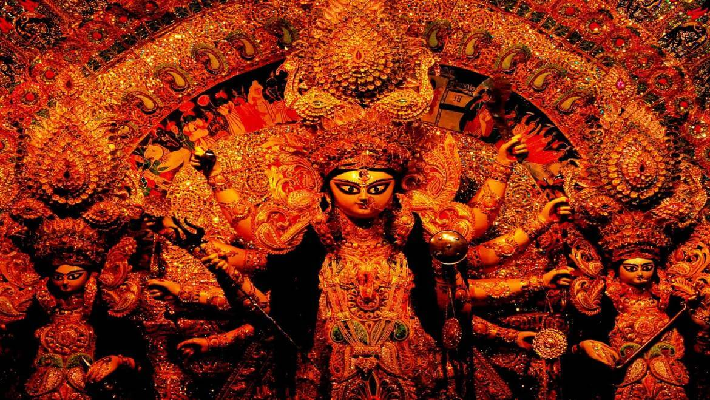

KOLKATA • WEST BENGAL
DURGA PUJATHE CITY COMES ALIVE
Five days. A thousand stories. One city transformed.
01 — OPENING
WHEN THE CITY TRANSFORMS
For a few unforgettable days, Kolkata becomes a living canvas of light, art, sound and devotion.

PUJA NIGHT • KOLKATAof celebration
across the city
in every lane
*Placeholder — replace with verified numbers in assets/js/data.js.
02 — THE PUJA JOURNEY
THE FIVE DAYS

03 — NOTABLE DESTINATIONS
THE HEART OF PUJA
Not a ranking — explore these Puja experiences across Kolkata.
04 — KUMARTULI
WHERE THE GODDESS TAKES FORM
Kolkata's historic clay-art quarter — where idols are shaped by hand.

05 — HERITAGE KOLKATA
BEYOND THE PANDALS
06 — PANDAL ART
ART THAT EXISTS FOR A FEW DAYS
Drag / scroll — full-bleed installations, light and craft.
07 — THE STREETS
THE CITY AFTER DARK
After sunset, the city tells a different story.
08 — TASTE OF PUJA
TASTE OF PUJA
09 — SOUND
THE SOUND OF PUJA
Dhak • conch • bells • crowds. No autoplay — press play.

10 — MAP
EXPLORE KOLKATA
Illustrative locations • OpenStreetMap via Leaflet — no API key. Edit in data.js → PLACES.
11 — PLAN YOUR PUJA
PLAN YOUR PUJA
Illustrative route only — not live navigation.
12 — ARCHIVE
THE PUJA ARCHIVE
13 — STORIES
PUJA STORIES
SEE YOU
IN KOLKATA
DURGA PUJA • KOLKATA • WEST BENGAL
EXPLORE AGAIN ↑Until the city comes alive again.